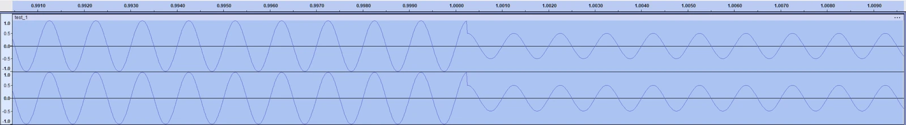
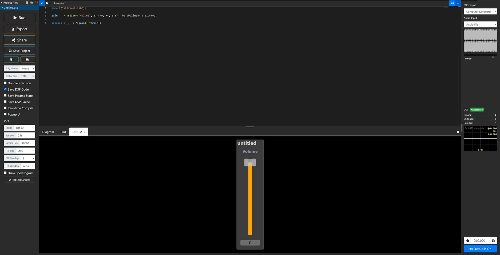
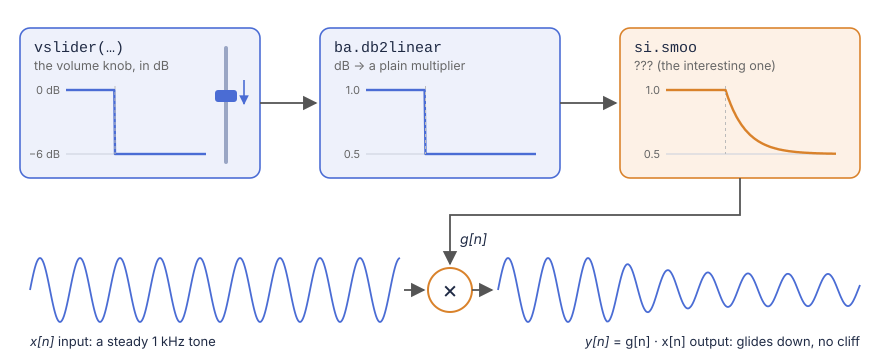
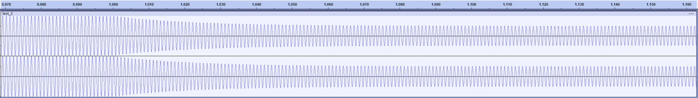
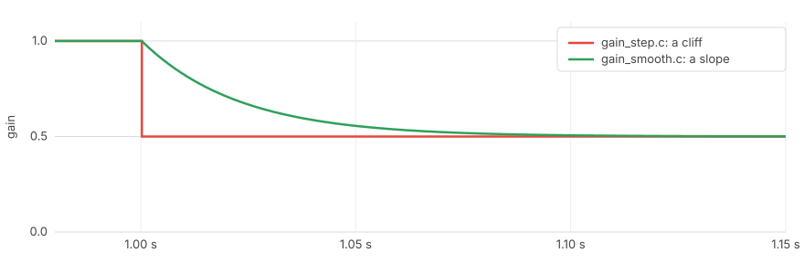

Why Volume Knobs Don’t Click: Parameter Smoothing in Digital Audio Algorithms
Before we begin
We turn volume knobs all the time: in the car, on a phone, on a speaker. The music gets louder or quieter, smoothly, and we never give it a second thought.
So what happens behind the knob? Digital audio is just a long list of numbers, one per sample. To change the volume, it seems all we need is to multiply every sample by a number, the gain: a bigger number to turn it up, a smaller one to turn it down.
That’s almost right. In practice, it’s a little more complicated than that. Let’s find out why.
A simple experiment
Our test signal is a 2-second, 1 kHz sine wave: 48 kHz, 16-bit, 2 channels, raw PCM (test.pcm). New to raw PCM? See I2S and TDM in Practice.
If we call the input sample , where counts samples, and the gain , then applying a gain is one multiplication per sample:
Let’s halve the volume at about one second in, the most direct way possible:
In C (gain_step.c):
#include <stdio.h>
#include <stdint.h>
#define SAMPLE_RATE 48000
#define CHANNELS 2
int main(void)
{
FILE *in = fopen("test.pcm", "rb");
FILE *out = fopen("test_1.pcm", "wb");
if (!in || !out) { perror("fopen"); return 1; }
int16_t frame[CHANNELS];
long n = 0; /* frame index */
while (fread(frame, sizeof(int16_t), CHANNELS, in) == CHANNELS) {
float gain = (n < SAMPLE_RATE + 12) ? 1.0f : 0.5f; /* g[n]; +12 lands the jump on a peak */
for (int c = 0; c < CHANNELS; c++)
frame[c] = (int16_t)(frame[c] * gain); /* y[n] = g[n]·x[n] */
fwrite(frame, sizeof(int16_t), CHANNELS, out);
n++;
}
fclose(in);
fclose(out);
return 0;
}gcc -O2 -o gain_step gain_step.c && ./gain_stepImport test_1.pcm into Audacity (File → Import → Raw Data: Signed 16-bit PCM, little-endian, 2 channels, 48000 Hz) and listen, or just play both versions here. Turn the volume down first: the test tone is at full scale.
Huh? It gets quieter, but there’s a distinct click at the one-second mark. Zoom in:

Right where the volume changes, the waveform falls off a cliff: from a peak to half its height in a single sample. That cliff is the click.
Yet a real volume knob doesn’t click, so the real audio module does more than multiply. To see what, let’s look at FAUST, a language built for writing audio algorithms.
1. Asking FAUST
Before fixing our code, let’s see how a tool built for audio handles volume.
FAUST’s volume control
FAUST ships with a volume example written by GRAME. Here it is, in full (gain.dsp):
import("stdfaust.lib");
gain = vslider("Volume", 0, -70, +4, 0.1) : ba.db2linear : si.smoo;
process = _,_ : *(gain), *(gain);Try it
Load it into the Faust IDE, drag a 1 kHz sine wave (sine_1k_5s.wav) onto the audio input’s waveform box, and drag the slider up and down:

No clicks, however fast the slider moves.
What’s inside
The gain line is a chain of three blocks joined by colons, and its output multiplies both channels:

The slider and the dB conversion are easy to guess. The interesting one is si.smoo, which somehow turns the step into a slope. Delete : si.smoo, run it again, drag the slider, and the crackle comes back. Whatever si.smoo does, it’s exactly what our code was missing. Let’s open it up.
2. From FAUST to C
FAUST can turn the same code into C. The Faust IDE has an Export button, but on Linux the command line is simpler:
sudo apt install faust
faust -lang c gain.dsp -o gain_faust.cThe result (gain_faust.c) is about 140 lines, but almost all of it is setup and user-interface glue. The real work happens in one short loop (lightly tidied):
float fSlow0 = dsp->fConst0 * powf(10.0f, 0.05f * dsp->fVslider0); /* once per block */
for (i0 = 0; i0 < count; i0++) { /* once per sample */
dsp->fRec0[0] = fSlow0 + dsp->fConst1 * dsp->fRec0[1];
output0[i0] = input0[i0] * dsp->fRec0[0];
output1[i0] = input1[i0] * dsp->fRec0[0];
dsp->fRec0[1] = dsp->fRec0[0];
}The names are machine-made, so let’s translate:
powf(10, 0.05 × dB)isba.db2linear: the target gain the slider asks for.fConst0is 44.1 divided by the sample rate, about 0.0009 at 48 kHz.fConst1is 1 minus that, about 0.9991.fRec0[0]is the gain that is actually applied, andfRec0[1]remembers its value from the previous sample.
So the first line inside the loop says:
On every sample, the gain takes a tiny step towards the target and keeps the rest of what it had. However suddenly the slider jumps, the gain can only follow a little at a time. That’s the whole trick.
Let’s drop that one idea into our own code. gain_smooth.c is gain_step.c with two new lines:
#include <stdio.h>
#include <stdint.h>
#define SAMPLE_RATE 48000
#define CHANNELS 2
int main(void)
{
FILE *in = fopen("test.pcm", "rb");
FILE *out = fopen("test_2.pcm", "wb");
if (!in || !out) { perror("fopen"); return 1; }
const float s = 1.0f - 44.1f / SAMPLE_RATE; /* pole, same as FAUST's fConst1 */
float g = 1.0f; /* smoothed gain, FAUST's fRec0 */
int16_t frame[CHANNELS];
long n = 0;
while (fread(frame, sizeof(int16_t), CHANNELS, in) == CHANNELS) {
float target = (n < SAMPLE_RATE + 12) ? 1.0f : 0.5f; /* same hard step */
g = (1.0f - s) * target + s * g; /* the one line that smooths */
for (int c = 0; c < CHANNELS; c++)
frame[c] = (int16_t)(frame[c] * g);
fwrite(frame, sizeof(int16_t), CHANNELS, out);
n++;
}
fclose(in);
fclose(out);
return 0;
}3. The same experiment, again
Same input, same jump from 1.0 to 0.5, at the same moment. The only difference is that the gain now goes through the smoother.
gcc -O2 -o gain_smooth gain_smooth.c && ./gain_smoothPlay both and listen at the one-second mark:
The click is gone. Zoom out a little in Audacity and the waveform shrinks gently instead of falling off a cliff:

Plot the gain itself and the difference is plain to see:

The gain covers about two-thirds of the way in 23 ms and is practically there after about 100 ms: instant to the hand on the knob, with no cliff left for the ear.
4. Not just gain
Volume is the easiest example, but the same problem shows up with any setting that changes while audio is playing: a filter’s cutoff, an EQ band’s boost, a pan position, a delay time. Change them in one step and the result is clicks or zipper noise, so audio code smooths them too. Sometimes with this same one-pole smoother, sometimes with a straight-line ramp over a fixed time, sometimes by crossfading between the old and new settings.
In a car we hear this all the time without noticing: the music fading out when we press mute instead of cutting off, or quietly ducking under a navigation prompt.
Wrapping up
Changing the volume really is a multiplication. But the number we multiply by has to get there gently, a little on every sample. That small detail is the difference between a click and a smooth fade.
All the files used in this post: test.pcm · gain_step.c · gain.dsp · sine_1k_5s.wav · gain_faust.c · gain_smooth.c